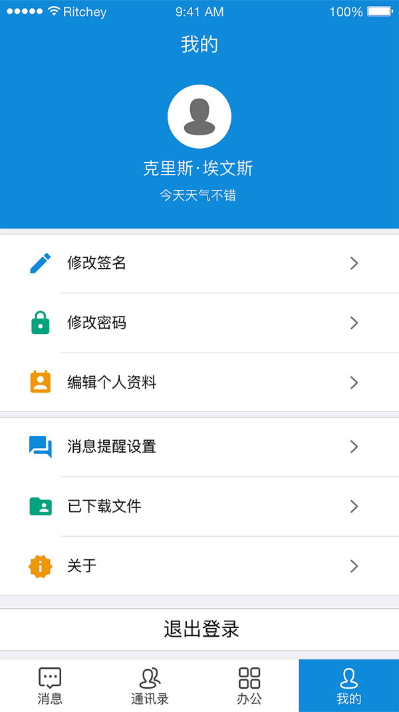

<!--
  Generated template for the TimelinePage page.

  See http://ionicframework.com/docs/components/#navigation for more info on
  Ionic pages and navigation.
-->
<ion-header>

  <ion-navbar color='primary'>
    <ion-buttons left>
      <button ion-button (click)='logout()'>
        <ion-icon ios="ios-exit-outline" md="ios-exit-outline" style='font-size:2.5rem;'></ion-icon>
      </button>
    </ion-buttons>
    <ion-title text-center>timeline</ion-title>
    <ion-buttons right>
      <button ion-button (click)='addTimeLine()'>
        <ion-icon ios="ios-add-circle-outline" md="ios-add-circle-outline" style='font-size:2.5rem;'></ion-icon>
      </button>
    </ion-buttons>
  </ion-navbar>

</ion-header>


<ion-content padding>
  <ion-card *ngFor="let item of data;">
    <ion-item>
      <ion-avatar item-start>
        
      </ion-avatar>
      <h2 class='userName'>{{item.user}}</h2>
      <p class='time'>{{item.time}}</p>
      <button ion-button color='danger' item-end (click)='delete($event)' data-id={{item.id}}>Del</button>
    </ion-item>
    
    <ion-card-content>
      <p>{{item.content}}</p>
    </ion-card-content>
  </ion-card>

  <!--<ion-card>
    <ion-item>
      <ion-avatar item-start>
        
      </ion-avatar>
      <h2 class='userName'>123</h2>
      <p class='time'>123</p>
    </ion-item>
    
    <ion-card-content>
      <p>wating</p>
    </ion-card-content>
  </ion-card>-->
</ion-content>
